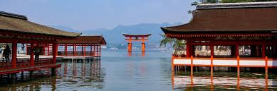

A:link{color:blue}
A:hover{color:magenta}
Japanese Attractions
Welcome to Japan
Japanese Attractions
l
1. Mount Fuji
In all the attractions in Japan, Mount Fuji is by far the most well known & famous. It is the biggest mountain in Japan, standing at 3776 meters tall. It is known for its slightly flattened top covered in snow. It's big enough that even if you are quite far away, you can still see it. Every year, around 300,000 people climb to the summit yearly. Overall it is probably the biggest attraction in Japan. (Literally)
l
l
2. Japanese Food
From the sweet Mochi to the savory Sushi, Japanese dishes are always packed with surprises. Despite there being an overwhelming amount of variety in Japanese food they are each unique in both their tastes and looks. And despite originating from the same country, they can be completely different with any taste from sweet to sour to spicy.
l
l
3. MiyaJima

Miyajima is an island in Japan known for its large shrines and friendly deer. The name "Miyajima" literally means "Shrine-Island". A long time ago humans were prohibited from setting foot on the island and would have to walk on the shrines. The deer were seen as holy messengers of the gods. Now, you are aloud to walk on the island, and it is filled with many attractions, from souvenir shops to restaurants. You may get a map to navigate the island but be careful! The deer may want a bite.
l
l
4. Japanese Festivals
Wether for a good harvest or for a holiday, the Japanese festivals or "Matsuri" are all ways brimming with color and joy. In a traditional matsuri, there are lanterns everywhere with stalls for food, snacks, gold fish, toys, and more. With many unique Japanese games you won't find anywhere else. Sometimes there will be groups of men pulling giant carts made as a house for gods. And at the very end you'll see beautiful fire works fill up the sky.
l
l
5. Onsen
From the warm regions of Okinawa to the coldest mountains, you can find onsets all over Japan. Onsen is the Japanese word for hot springs. And after a long day of sight seeing, soaking your self in a onsen is always the best way to calm your self down. And afterwards having a drink of cold milk or an soft-cream (Japanese ice cream) is always refreshing.